Разработка, отладка и выполнение программы на составление и вычисление выражений. Преобразование типов данных
Выполнить задания (см. ниже). Файлы с выполненными заданиями сохранять в личной папке в каталоге pr3. Имена файлов указаны в заданиях (см. ниже).
Оформить в MS Word отчет о практической работе, включающий:
Отчет распечатать и представить при защите ПР.
Задания
Задание 1. Составить линейную программу, в которой вычисляется значение выражения:
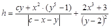
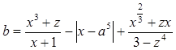
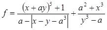
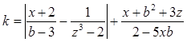
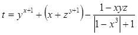
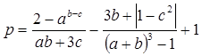
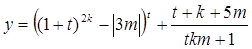
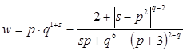
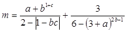
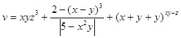
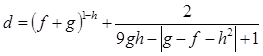
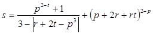
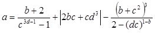
- Проект сохранить с именем
task3_1 в папке pr3_1.
- Целочисленные значения переменных, входящих в выражение, задать непосредственно в коде программы
- Организовать вычисление выражения в операторе присваивания
- Выполнить программу и получить результат, исправив ошибки при их наличии
Задание 2. Составить программу для расчета выражений z1 и z2, результаты которых должны совпадать.
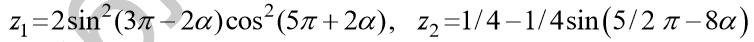
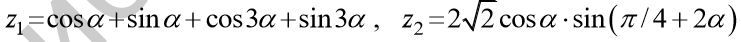
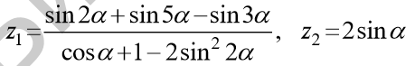
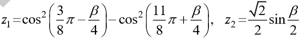
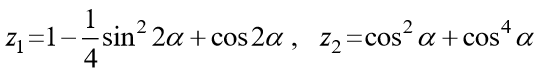
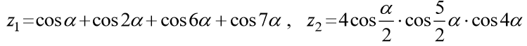
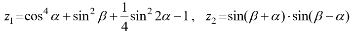
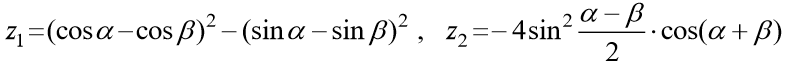
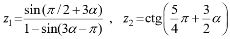
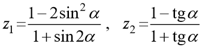
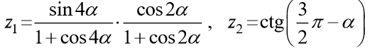
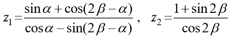
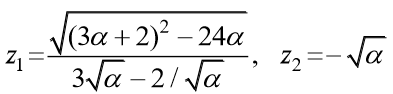
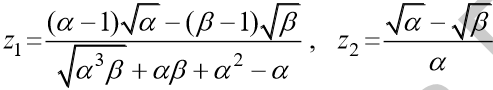
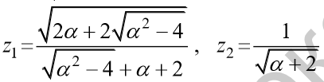
- Проект сохранить с именем
task3_2 в папке pr3_2.
- Значения исходных данных вводить с клавиатуры (в радианах)
- Значение 3,1415926 определить как константу PI.
Задание 3*. (* означает не повышенную сложность, а отсутствие вариантов) Составить программу, которая выводит на экран размер типов данных int, long int, long long int, short, char, float, double, long double. При определении размера типов использовать функцию sizeof().
Проект сохранить с именем task3_3 в папке pr3_3.
Задание 4*. Вы пришли в обменный пункт валюты с суммой в n долларов и хотите поменять эту сумму на евро, но банк не проводит прямую конвертацию долларов в евро. Сначала доллары переводятся в рубли, а затем рубли – в евро. Составить программу на С, которая считывает с клавиатуры количество долларов и переводит в рубли, выводит это количество на экране, а затем вычисляет целое количество евро, которые мы можем получить при обмене и остаток рублей. Курс для перевода доллара в рубли и курс для перевода евро в рубли задается с помощью директивы препроцессора #define.
Проект сохранить с именем task3_4 в папке pr3_4.
Вы полностью закончили практическую работу № 3? И показали выполненные задания преподавателю?
Поздравляю! У Вас есть шанс успеть оформить работу прямо сейчас, а дома только распечатать. Приступайте!
Контрольные вопросы
- Что означает #define?
- Какой размер в вашей ОС имеет тип данных
char
int
float
double
long int
long long int
long double
short
?
- Как задать
шестнадцатеричную константу
восьмеричную константу
константу типа
long int
константу типа unsigned int
константу типа long double
константу типа float
константу типа double
символьную константу
строковую константу
?
- Чем отличается x++ от ++x?
- Что такое декрементация?
- Приоритет выполнения арифметических операций.
- Что означает операция %?
Теория